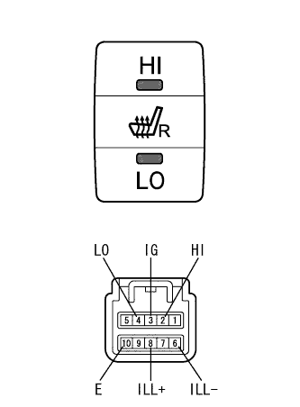
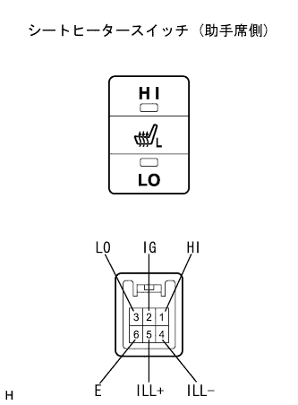

Seat Heater Switch Inspection |
| 1. Seat Heater Switch RH |
 |
Resistance Inspection
Using SST (Toyota electrical tester), measure the resistance between each terminal.
| Tester Connection | Condition | Standard |
|---|---|---|
| 3(IG) - 4(LO) | LO side ON | Below 1 Ω |
| 3(IG) - 4(LO) | LO side OFF | 10 kΩ or higher |
| Tester Connection | Condition | Standard |
|---|---|---|
| 3(IG) - 2(HI) | HI side ON | Below 1 Ω |
| 3(IG) - 2(HI) | HI side OFF | 10 kΩ or higher |
Indicator Inspection
Check that the indicator comes on when the battery is connected between each terminal of the seat heater.
| Tester Connection Battery positive - Battery negative | Condition | Specified Condition |
|---|---|---|
| 3(IG) - 10(E) | LO side ON | Illuminated |
| Tester Connection Battery positive - Battery negative | Condition | Specified Condition |
|---|---|---|
| 3(IG) - 10(E) | HI side ON | Illuminated |
Illumination Inspection
Check that the illumination comes on when the battery is connected between each terminal of the seat heater switch.
| Tester Connection Battery positive - Battery negative | Condition | Specified Condition |
|---|---|---|
| 8(ILL+) - 6(ILL-) | Always | Illuminated |
| 2. Seat Heater Switch LH |
 |
Resistance Measurement
Using SST (Toyota electrical tester), measure the resistance between each terminal.
| Tester Connection (Terminal Symbol) | Condition | Standard |
|---|---|---|
| 2(IG) - 3(LO) | LO side ON | Below 1 Ω |
| 2(IG) - 3(LO) | LO side OFF | 10 kΩ or higher |
| Tester Connection (Terminal Symbol) | Condition | Standard |
|---|---|---|
| 2(IG) - 1(HI) | HI side ON | Below 1 Ω |
| 2(IG) - 1(HI) | HI side OFF | 10 kΩ or higher |
Indicator Inspection
Check that the indicator comes on when the battery is connected between each terminal of the seat heater switch.
| Tester Connection (Terminal Symbol) Battery positive - Battery negative | Condition | Specified Condition |
|---|---|---|
| 2(IG) - 6(E) | LO side ON | Illuminated |
| Tester Connection (Terminal Symbol) Battery positive - Battery negative | Condition | Specified Condition |
|---|---|---|
| 2(IG) - 6(E) | HI side ON | Illuminated |
Illumination Inspection
Check that the illumination comes on when the battery is connected between each terminal of the seat heater switch.
| Tester Connection (Terminal Symbol) Battery positive - Battery negative | Condition | Specified Condition |
|---|---|---|
| 5(ILL+) - 4(ILL-) | Always | Illuminated |